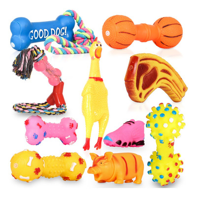

Brinquedo Mordedor em Silicone Resistente para Cães
Imagem do produto Brinquedo Mordedor em Silicone Resistente
Descrição: O Brinquedo Mordedor em Silicone Resistente é ideal para cães de todas as idades. Produzido com material seguro e durável, ajuda a aliviar o estresse, reduzir a ansiedade e estimula a mastigação saudável, promovendo a higiene bucal e fortalecendo a mandíbula.
Indicação: Cães de pequeno, médio e grande porte.
Material: Silicone atóxico e flexível.
Dimensões: 12 cm x 6 cm
Preço: R$ 24,90
Benefícios
• Auxilia na higiene bucal
• Reduz a ansiedade e o tédio
• Material resistente e durável
• Seguro, leve e fácil de limpar
← Voltar para os produtos